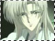

I n f o r m a t i o n /relationships.html
KAMUIKamui, accompanied by Sorata and Arashi, went to see Hinoto in episode 5. Hinoto is the one who knows Kamui and the current situation the most, more than he knows himself. She reveals her visions and dreams of the future to Kamui, but Kamui could not sense a strangeness in her until much later. Hinoto hinders Kamui's movements numerous times, but in the end it was Kamui who agreed to Hinoto's wish, as it can only be granted by him.
KANOEKanoe is Hinoto's younger sister. She does not have the ability to see the future in her dreams like Hinoto does, but she does have the ability to enter anyone's dreams and therefore see the future as well. Kanoe is always taunting her older sister, telling her that there's only one future for the world and lowering her hopes of saving the world. However, in the end, Hinoto proved to be stronger than her younger sister, and she shattered Kanoe's wishes to destroy the world. For more on their relationship, please visit
sisters.
ARASHIArashi serves Princess Hinoto along with Saiki, Hien and Sohi. Earlier in the series, Arashi often communicates with Hinoto via telepathy, and Arashi brought Sorata and Kamui to see Hinoto. Arashi accepted Hinoto's request to protect Kamui in the beginning of the series, but their communication lessened as the series went on.
SAIKISaiki is also a servant of Princess Hinoto. Even though he is not one of the Seven Seals, he still has the ability to manipulate wind. Aoki, the Seven Seals' windcaster, used to be his teacher and it was he who taught Saiki how to use wind. Saiki also went to Kamui several times and doubted that he's the true Kamui at first, because of his irrational behavior. Saiki died later protecting Hinoto.

KAKYOUKakyou is the dreamgazer of the Dragons of Earth. As a dreamgazer, he can enter and leave other dreamgazers' dreams as he chooses. He enters Hinoto's dreams many times to remind her that the future she saw cannot be changed. No matter how much she hopes or wishes, there can only be one future and neither of them can do anything about it.
HIEN & SOHIHien and Sohi are both created by Hinoto using her charms/tailsman. Thus, when she dies, they vanish and turn back into charms. They are twins and very human-like, but are not human, but merely spirits. They aid Hinoto in every way possible and guard the basement.
x
clear x